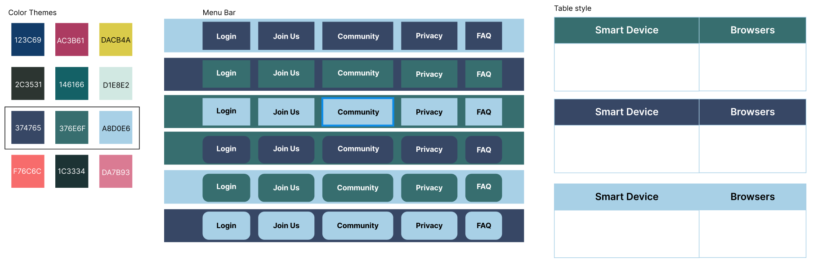

Responsive Redesign
Background
My friend who currently does research at Brown University’s Chemistry Department has complained about the website called Faces Scheduling System; this website helps individuals (outside of Brown's Chemistry Department) to book time on the NMR machines in their research lab. On the homepage, it contains a hyperlink called “New Faces Scheduling System works with smart-devices and supports Color Blind Mode,” and it leads to the web page that lists new features and the devices that have been tested on. This page can be very misleading, and I will be investigating the problems and exploring different ways to improve the website.
Usability Problems
Original Webpage:
https://faces.ccrc.uga.edu/newfaceshelp.htmlClick on the arrows to view the images of the webpage (total of three pages)!
Finding Problems with Website
On the webpage, there are four big sections: (1) "Welcome to the new Faces Scheduling System" section,
(2) "Help screen for the new interface" and "The new look of the Faces Schedule" sections,
(3) "We have tested the new Faces System with the follwoing operating systems, smart devices, and devices" section,
and (4) "Directions for adding the Faces System's icon to your iPhone screen" section.
I identified the problem in four big categories: inconsistency , irrelevance,
inefficiency, and misleading, and I will cite where these problems are located by the
corresponding section number.
- Inconsistency
- Incorrect grammar ("sept" at (4))
- Inconsistent capitalization (“Welcome to the new Faces Scheduling System” at (1)) (The directions at (4))
- Inconsistent font size
- Irrelevance
- The users (e.g. BrownU’s chemistry students in research) might have a difficult time understanding what “java applets” mean at (1)
- Inefficiency
- Missing header (does not provide flexibility for users to go to other pages on the website)
- The table scales down as the device gets smaller in size at (4)
- Missing footer
- Misleading
- Images are hard to recognize at (2)
- Table is hard to read at (3), and table does not have any caption.
- Footnote above and below the table is unnecessary at (3)
- The heading "Directions for adding the Faces System's icon to your iPhone screen" is unclear and ambiguous in its meaning (at (4))
WAIVE Accessibility
Most of what WAIVE reported were along the same line of what I had found to be the usability issues (missing texts and headers, etc.); missing alternative texts could have been fixed with better HTML conventions.
Visual Redesign
I created a low-fidelity and high-fidelity prototypes for 3 wireframes: laptop, tablet, and mobile to address the problems I have identified.
Low-Fidelity Prototyping
Click on left and right arrows to navigate through different wireframes!
High-Fidelity Prototyping
Before I start my high-fidelity prototyping, I created a visual desing style guide. Because there are not an established color scheme in the website, I first came up with different choices of color schemes. Then, I tried to focus on the header design, more specifically the menu bar. I also experimented with the table style.
After creating a visual design style guide, I moved on to creating high-fidelity prototype of the website for the three wireframes again: laptop, tablet, and mobile. Click on the left and right arrow to see my Figma prototypes!
Responsive Redesign
Based on the usability problems I have identified and on the low and high fidelity prototyping, I
redesigned the webpage using HTML and Bootstrap's CSS components. Click "Redesigned Webpage" below to explore the newly, responsively redesigned webpage!
Redesigned
Webpage